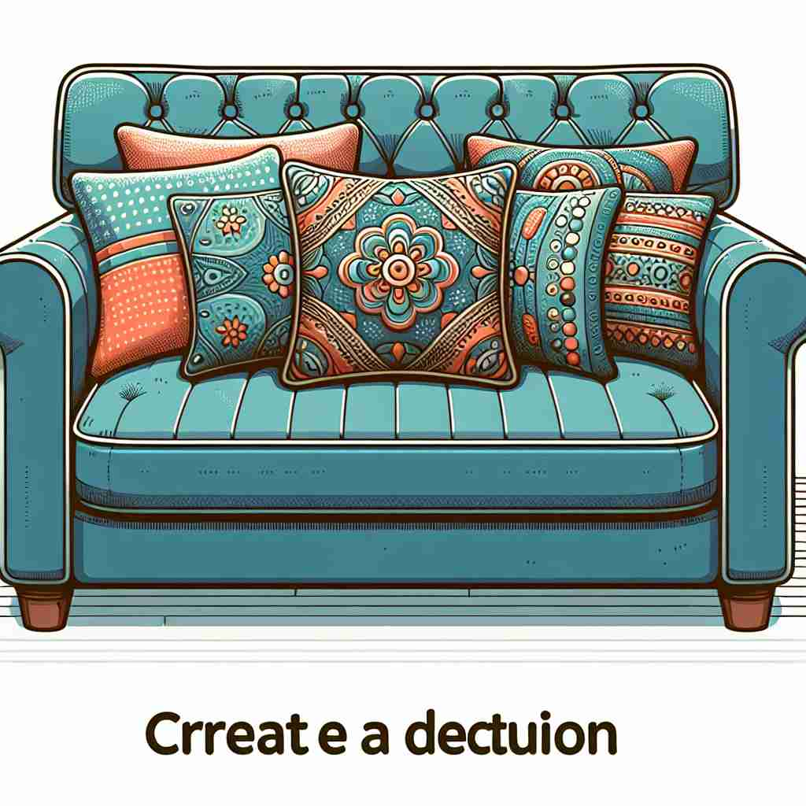

💬 She loves to sit on the soft cushion of the sofa.

💬 The chair has a soft cushion to make sitting more comfortable.
🔈 ['kʊʃ(ə)n]
🗝️ n. a soft object or part used to make something more comfortable to sit or lie on
🖼️ 在一个舒适的客厅里，沙发上放着几个色彩斑斓的靠垫。家人们坐下时，轻轻地靠在这些软软的枕垫上，感受到它们带来的温暖与舒适。这个场景展示了'cushion'作为让座位或躺下时更舒适的软物的含义。
🔍 想象一个软垫（cushion）为我们提供舒适。无论是实体的坐垫，还是抽象的缓冲作用，都源于这个核心概念。软垫可以减轻压力，提供保护，存在于两个表面之间，甚至可以用来形容相似形状的物体。通过联想软垫的特性，你可以更容易理解和记住'cushion'的各种用法。
💬 She loves to sit on the soft cushion of the sofa.
💬 The chair has a soft cushion to make sitting more comfortable.
🌳 单词 'cushion' 源自拉丁词根 'cushion' 意为“垫子”，用于软化或支撑物体。
💡 记忆 'cushion' 时，可以联想为 '软软的垫子'，帮助记住它的功能是为了提供舒适和缓冲。
🗝️ v. to reduce the force or effect of something
🖼️ 在一个繁忙的公路上，汽车司机小心翼翼地开车，突然前方出现了障碍物，他迅速踩下刹车，车辆的缓冲系统减缓了冲撞的力道，使得乘客们没有感受到过大的震动。这里演示了'cushion'作为减缓或削弱某事物的力量或效果的动词含义。
💬 The government's policies are designed to cushion the impact of the economic downturn.
❓ 像坐垫减轻坐硬物的不适一样，减轻某事的影响
🗝️ n. a comfortable amount of something extra that protects you against future problems
🖼️ 在一个公司的董事会议上，财务总监正在介绍本季度的财务状况。他强调，公司储备了一笔资金，以应对未来可能出现的经济波动，为企业提供了财务缓冲。这个场景说明了'cushion'作为应对未来问题的额外保护措施的名词含义。
💬 We have a financial cushion to help us through unexpected expenses.
❓ 像坐垫提供额外舒适一样，提供额外保护
🗝️ n. the layer of air or other gas between two surfaces
🖼️ 在一个高科技实验室中，科学家们正在展示一个新型悬浮设备。在演示中，设备利用空气缓冲层让物体悬浮于表面之上，减少了摩擦。这展示了'cushion'作为两个表面间气体层的名词含义。
💬 The hovercraft moves on a cushion of air.
❓ 像坐垫在人和座位之间一样，存在于两个表面之间
🗝️ n. the top part of the head of some mushrooms
🖼️ 在一个森林探险中，小朋友们发现了一大片蘑菇，观察它们时激动不已。老师指着其中一个蘑菇，解释说："看看这个蘑菇头顶部的结构，它就像一个小小的垫子。"这个场景演示了'cushion'作为某些蘑菇头顶部部分的名词含义。
💬 The cushion of this mushroom species is bright red.
❓ 形状像软垫的蘑菇头部